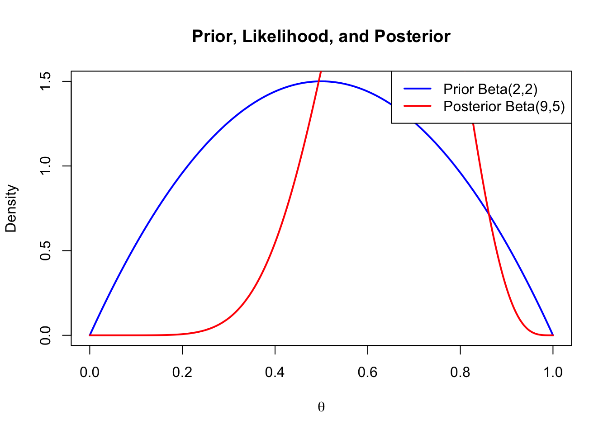

# Posterior update for a Binomial model
alpha0 <- 2; beta0 <- 2 # prior
n <- 10; y <- 7 # data
alpha1 <- alpha0 + y; beta1 <- beta0 + n - y
theta <- seq(0, 1, length.out = 500)
plot(theta, dbeta(theta, alpha0, beta0), type="l", lwd=2, col="blue",
ylab="Density", xlab=expression(theta),
main="Prior, Likelihood, and Posterior")
lines(theta, dbeta(theta, alpha1, beta1), col="red", lwd=2)
legend("topright",
legend=c("Prior Beta(2,2)", "Posterior Beta(9,5)"),
col=c("blue", "red"), lwd=2)